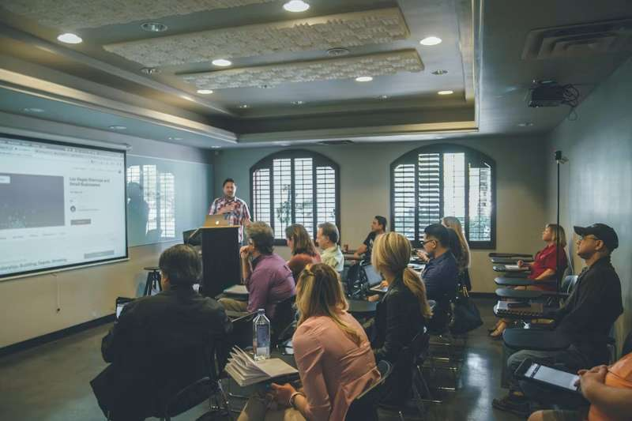
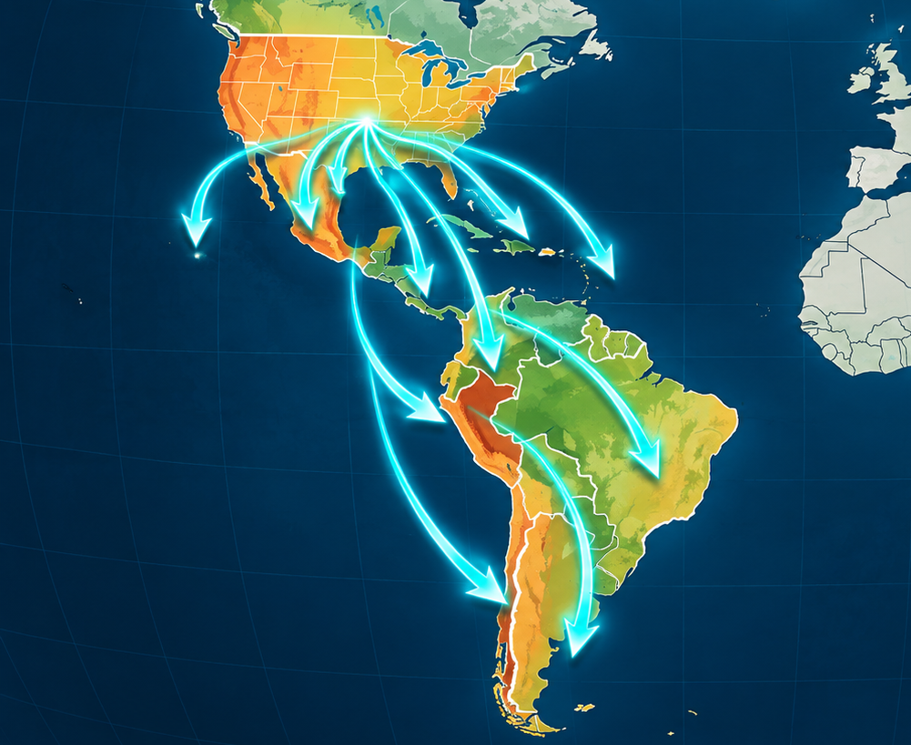

¿QUÉ ES FUNDACIRE?
FUNDACIRE es el nombre abreviado de “Fundación Ciudad Refugio”. Somos una Organización Sin Fines de Lucro (501.C3). Aspiramos a ofrecer apoyo sustantivo a personas en situaciones adversas, mediante asesoramiento, instrucción, dirección y motivación para que puedan salir adelante y se conviertan en elementos altamente productivos dentro de la sociedad en que vivimos. Trabajamos mediante proyectos con objetivos que apuntan a las necesidades específicas de cada grupo beneficiario, de la solidaridad del que tiene para dar.
“Venid a mí todos los que estáis trabajados y cargados, y yo os haré descansar”
(Mateo 11:28)
Visión :
Como organización de carácter internacional no lucrativa, FUNDACIRE se mantiene desarrollando proyectos que ayuden a superar necesidades de grupos sociales y/o individuos vulnerables del área geográfica donde la Fundación tengan presencia.

Misión :
Su misión es altruista, pero a la vez comprometida con hacer el bien, involucrando en sus proyectos a organizaciones y/o individuos calificados para la ejecución de los proyectos que se dirijan desde la Sede, o en los Centros de Desarrollo Comunitario locales, o sedes en países fuera de los Estados Unidos.
Objetivos :
Crear, estructurar y ejecutar proyectos en Centros de Desarrollo Comunitario, donde se desarrollen, para ofrecer instrucción, orientación e impulso a grupos o individuos marginados, para que se conviertan en un factor multiplicador de bienestar para sus vecindarios, y por extensión, para la comunidad más inmediata.